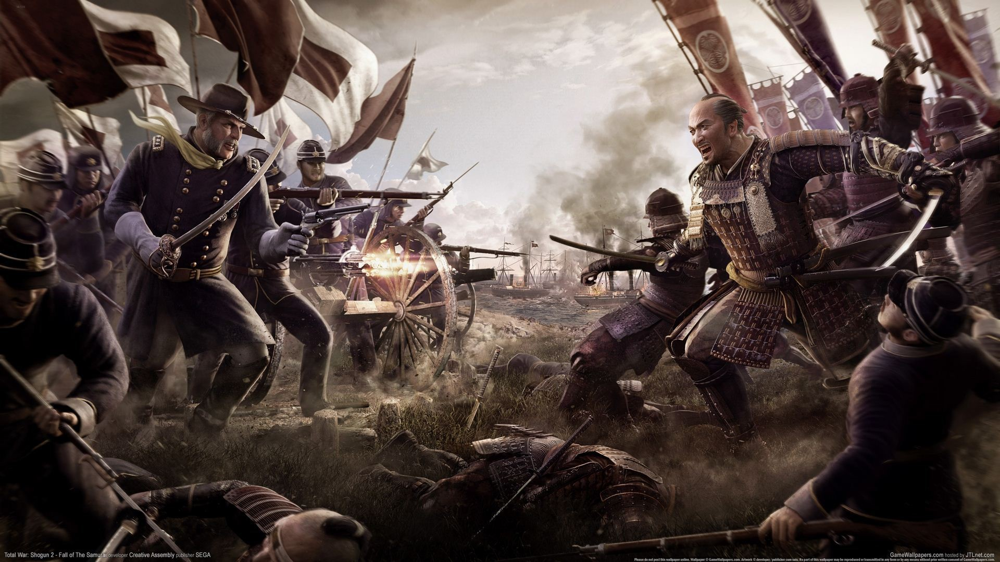
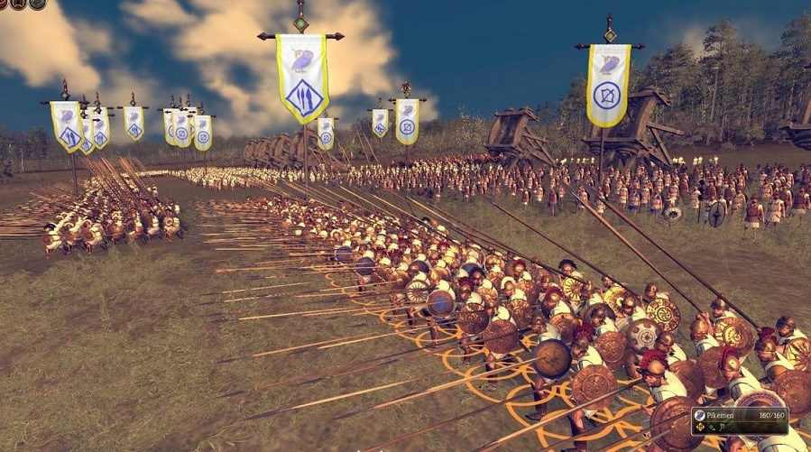
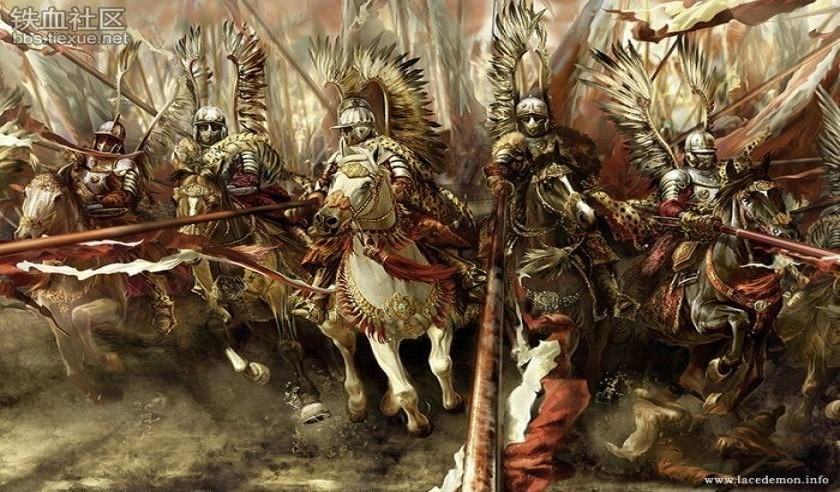
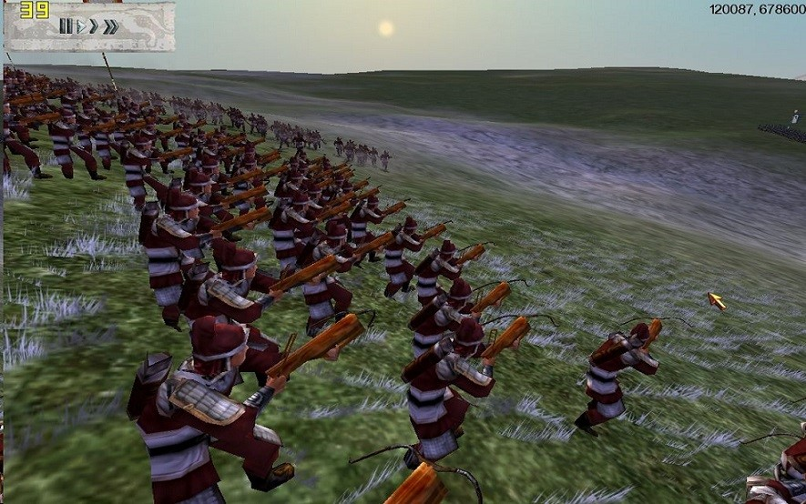

TotalWar经验心得
玩《帝国：全面战争》已经有很长的时间了，于是想在此发表一下获得的经验和策略。

《帝国：全面战争》与其前作相比，策略成为了主菜，扩大了地图的面积，囊括了世界上的主流国家，全面向我们展示了近代资本主义世界扩张的盛况。这是一款能够增强人们的思考能力的游戏，接下来我将一一向大家介绍各国的发展策略，由于本人是种田流派，并不热衷于局部战役所以扩张过程中后期有暴兵的痕迹。
国别篇
英格兰
英格兰是最容易上手的国家，而且开局就能早四级战列舰，欧洲大陆的国家大都会修建城堡，而且于是国土狭小的国家驻军愈多，所以在欧洲扩张不是明智之举，我们应该控制海洋，展开贸易、控制摩洛哥、医院骑士团、锡金，这些濒临航线的国家，消灭海盗的贸易点，以及加勒比海上的海盗城市，同时尽可能的与各国开展贸易。
当海洋战略完成后，就可以在美洲展开扩张，但凡那些土著就统统灭掉，土著的士气非常低，一般两排齐射就可以击溃敌人。印度半岛同样也是进攻的目标，莫卧儿帝国就是最好进攻对象，国力小、无盟国并且与盟国关系不好。
当海外殖民地占得差不多时侯，我们就可以从欧洲登陆进攻法国。首先，我们要把两个满编从法国北部登陆，登陆的位置尽可能的靠近巴黎，当第二个回合皆可以进攻巴黎了，两个满编的兵力，无论法国人有多少的兵力都无法抵挡我们的进攻，然后法国灭亡，法国在美洲北部的殖民地都叛变了，于是我们就有了新的扩张空间。至此玩家基本控制了40个行省，完成了长期目标。
法兰西
法兰西是传统的欧陆大国，并且在北美有大片的殖民地，因为欧洲大陆扩张极其困难，而且北美有雄厚的实力，所以法兰西的扩张策略很简单，广开贸易，建立一支强大的海军，保护航线及港口的安全，在本土建立一支足够自保的军队，在北美则是极力扩军，还是先打土著，再打英国的殖民地，最后是西班牙的殖民地
西班牙
西班牙的情况和法国极其相似，双方都在北美拥有大片的殖民地，葡萄牙是西班牙的近邻，也是一个安全隐患，所以，葡萄牙要尽快灭掉。西班牙攻略参考法兰西。
普鲁士
普鲁士位于中欧北部，有两个港口，国土被分割成两个部分，没有海外殖民地，西欧国家大多军力强盛，所以操作不好就会有亡国的危险！如果要扩张的话，建议向西打波兰、俄罗斯，波兰的城市都没有城墙，比较好打，按照此种思路一路打下去，然后是奥地利，当打完之后，你就差不多完成任务了。
波兰—立陶宛
波兰立陶宛，名字听起来就和别国都不一样，它是由波兰和立陶宛二者和聚而成，在历史上，波兰的国家重要事务都是有一千人贵族会议决定的，这个贵族会议实行的是一种“全票通过”的制度，也就是说：如果有一个人提出来反对意见，那么会议就重新召开。所以，贵族会议很难以达成决议，波兰近代史充满了外敌入侵与内乱。言归正传，波兰的攻略与普鲁士很像，贸易和经济发展参考普鲁士，陆地扩张向俄罗斯扩张，然后是奥地利，其次是普鲁士。
尼德兰
尼德兰是一个典型的贸易国家，他开局时拥有三块领地分散在三个不同的地方，所以需要足够的兵力去保护本土，尼德兰各地驻军都很弱，不足以四处扩张，尼德兰真正的领域在海上，在尼德兰的国家生活中，海洋占据了重要地位，据对要以海军优先，用海军去控制航线和贸易点还有港口，这样获得财富。
葡萄牙
葡萄牙国情与尼德兰相似，发展战略参考尼德兰，里斯本旁的西班牙要极力防范，首都要有足够的军队，到了游戏后期西班牙一定会对你宣战的，不过只要防守严密，西班牙占不到甜头的。
奥地利
地利是德意志的一部分，与普鲁士同宗同源，但是在两者却是竞争关系，但奥地利比普鲁士更有统一德意志的潜力。奥地利有五块领土，而且都连在一块，在中欧已是难得的有战略纵深的国家，奥地利同样也没有海外殖民地，也有一个港口，应当向威尼斯夺取一个港口或者向东南奥斯曼夺取一块领土，与外国展开贸易获得资金，扩张方向应当是——奥斯曼——波兰——普鲁士——俄罗斯。
俄罗斯
俄罗斯是东欧的内陆大国，开局就是最大的国家，但这么大的国家连个港口都没有，实在对不起第三罗马帝国的名讳，而俄罗斯北面有强敌瑞典的威胁，南部有克里米亚汉国的窥视和车臣的骚扰，可以说封建帝国的统治四面危机。个人建议在南面驻扎两个半满编，这样两个小国就不敢乱动了。瑞典是重点，瑞典兵强马壮，而且会立刻南下，从圣彼得堡到莫斯科只需两个回合，所以瑞典非常危险。暴兵北上，夺回圣彼得堡，展开贸易，瑞典失去圣彼得堡这个重要城市后，实力大损，玩家只需循序渐进，步步为营即可，吞并瑞典，在与瑞典的战争中，可以与瑞典的敌国—挪威结盟，可以从北线牵制瑞典，为玩家营造一个宽松的作战环境。当瑞典灭亡之后，挥师南下把克里米亚汉国和车臣灭掉，然后向西扩张，凡是在西面的国家都是进攻的对象。有时候，老毛子发起威来城墙都挡不住。
马拉地
马拉地是唯一可以选择的亚洲国家，如果用这个国家去征服世界，那感觉叫一个爽。话不多说，马拉地开局便于巴基斯坦是交战关系，与马拉地首都相当近的莫卧儿虽然也是印度教国家，但是在你后方空虚的时候它一定会在背后叉你一刀，所以对巴基斯坦的战争中，不要忘记防备莫卧儿。我的方法是先和巴基斯坦议和，，然后用一个满编灭亡莫卧儿，记住，一定要快，巴基斯坦不会给你太多时间，之后再向巴基斯坦开战，一路向北进攻。巴基斯坦除了靠近你的两个大城市和首都有些兵力，，其他的都不值一提。把巴基斯坦灭掉之后一定要夺取果阿，果阿和莫卧儿一样是我们身边的卧虎，当巴基斯坦灭亡之后，波斯因为地缘政治的原因也会和你开战，然后一直打下波斯全国，直到目标完成。
奥斯曼
土耳其位于基督教和伊斯兰教的交界地带，宗教矛盾一直是地区安全问题的一大挑战，它西邻地中海是地中海东岸的一大强国。首先通过贸易来增加收入，然后向波斯，巴巴里诸国、巴基斯坦、摩洛哥扩张，因为都是伊斯兰教国家，所以比较容易同化。
战术篇
陆战
海战
兵种篇
步兵
全面战争冷兵器时代
步兵
- 民兵：战斗力低，士气低，装备差，但是维护费低，适合用来镇压后方城市。
- 刀盾兵：装备大盾提供了较好的防御，军队最前线的兵种，抵御敌军骑兵冲击，防御步兵接敌，保护后方部队，主力兵种。
- 弩兵：装备的踏张弩拥有极远的射程和杀伤力，但是其本身没有什么防护和近战能力，所以应该要在装甲部队的保护下发挥火力。
《帝国》中的步兵分为： - 民兵：战斗力低，士气低，装备差，但是维护费低，适合用来镇压后方城市。
- 线列步兵：装备前装燧发枪，射速较慢，射程近，精度差，但是士气高，有肉搏能力，比较全面的兵种，
- 掷弹兵：在线列兵的基础上添加了投掷手榴弹的能力。
- 猎兵：装备线膛步枪，射程远精度高，但是人数少，士气，射速低，适合狙击敌人。
骑兵
全战中的骑兵在《帝国》与其他系列中有不同的体现，
非《帝国》系列中的骑兵分为： - 重甲骑兵：装备有重甲和骑枪，可以组成楔形阵，适合冲击和近战，用来凿穿敌人浅纵深部队，破坏敌人阵型，用得好的话可以造成敌人阵线崩溃。
- 弓骑兵：轻甲或无甲，持有弓箭，利用其高机动性可以对步兵执行放风筝战术，以极低的伤亡或零伤亡杀伤敌军。
《帝国》中的骑兵分为三种： - 龙骑兵（重骑兵）：这种骑兵装备有较好的装甲和速度，可以组成楔形阵和菱形阵，有冲击能力，但是不能冲击敌阵火力输出正面，冲击完之后要及时拉开，否则失去速度的骑兵会被敌人的线列缠上，适合冲击敌人侧面和溃败的敌人。
- 猎骑兵（轻骑兵）：装甲和速度略差，不能组阵，但是装备有火枪，可以切换散兵模式，适合对敌人执行游击战术，消耗敌人兵力。
- 火枪骑兵（远程骑兵）：类似于上了马的线列步兵，射程较远，速度很慢，不能冲击，作用较为鸡肋。
攻城器
兵种相克
在理想条件下，4类兵种的强弱点可以归纳如下：
- 原则1：重步兵在正面防御时对于重骑兵占优。这个原则要求重步兵训练有素，使用长兵器。中世纪的民兵不算。拔刀的弓箭手不算。
- 原则2：重骑兵对于重步兵战斗队形的侧翼和后方有毁灭性优势。这点之所以能跟原则1同时存在，是因为古代战争中重步兵战斗队形在交战中转身对付另一个方向的威胁，是完全不可能的，几乎没有任何成功的例子。当然这个问题并非无法解决，下面会谈到。
- 原则3：重骑兵对于轻步兵具有绝对优势，不论轻步兵是否试图转变成不合格的重步兵。
- 原则4：轻步兵对于重步兵具有天然优势。这个原则的前提是轻步兵必须使hit and run策略，随着而来的就是受到地形和指挥官的限制很大。如果由于某种原因，战斗变成近战，那么轻步兵自动转化为不合格的重步兵，必然导致失败。
对于这个原则，笔者认为有必要做进一步说明。在原著中，archer jones用于证明该原则的战例较为薄弱。大部分都是非正规军的轻步兵对正规重步兵的胜利。究其原因，主要在于正规步兵的作战往往意味着纪律和阵型。而轻步兵使打了就跑战术的时候，却通常要求采用分散队形并且不断的后退。这对于多数古代正规军来说都是难以想象的。不过在许多情况下，重步兵由于某种原因（如对方重骑兵的侧翼威胁）无法有效前进，则该原则对正规军有效。具体战例如黑斯廷斯和福科克战役。 - 原则5：在射击对抗中轻步兵对于轻骑兵具有优势，原因是地面平台保证更高的射速和准确性。不过需要注意，轻骑兵这时候通常会拔刀变成重骑兵，尽管是不合格的重骑兵，借助马匹的冲击力通常还是足以通过冲锋击溃轻步兵。
- 原则6：轻骑兵对于重骑兵具有天然优势。这个原则跟原则3非常类似，前提同样是轻骑兵必须使打了就跑策略，随着而来的就是受到地形和指挥官的限制很大。如果由于某种原因，战斗变成近战，轻骑兵自动转化为不合格的重骑兵，同样导致失败。
- 原则7：轻骑兵对于重步兵具有天然优势。这个原则跟上面的3，4不同，由于速度差别，hit and run的战斗很容易实行，所以优势很大。

- 原则8：相同兵种对抗，防御一方具有天然优势。这点对于重步兵非常明显，对于重骑兵则完全不符合。
- 原则9：以上原则是在双方水平相差不大的情况下有效。此条为笔者根据个人理解添加。
- 原则10：以上原则仅仅反映各兵种的内在优缺点，不能确保战斗的最终结果。战斗结果还取决于指挥官能否正确的扬长避短以及其他不可预知的因素。此条一样为笔者根据个人理解添加。
所谓使用步兵对抗骑兵（这里说的都是战术层面的），则必须在轻重步兵的合同这一前提下完成。而对抗中的基本特色是防御。如果你同意上面那个图，那么这个结果是显然的，骑兵（无论是怎么样的骑兵，哪怕是拜占庭优秀的混合型职业骑兵）在良好的步兵合同下是脆弱的，无法发动有效的进攻。
因此，我作了“步兵可以对抗骑兵”这个断言。
骑兵的强大的战场战术机动能力，是步兵可望而不可及的。骑兵可以利用其机动打击步兵方阵的薄弱部位。为了弥补方阵后方的薄弱，步兵方阵必须作相应的调整，这大大限制了其整体运动能力。因此，步兵主动向骑兵发动进攻，是相当困难的。这也是很多人坚持认为骑兵对步兵具有优势的原因。我们可以看到，这个优势是不可靠的。
to be continue………